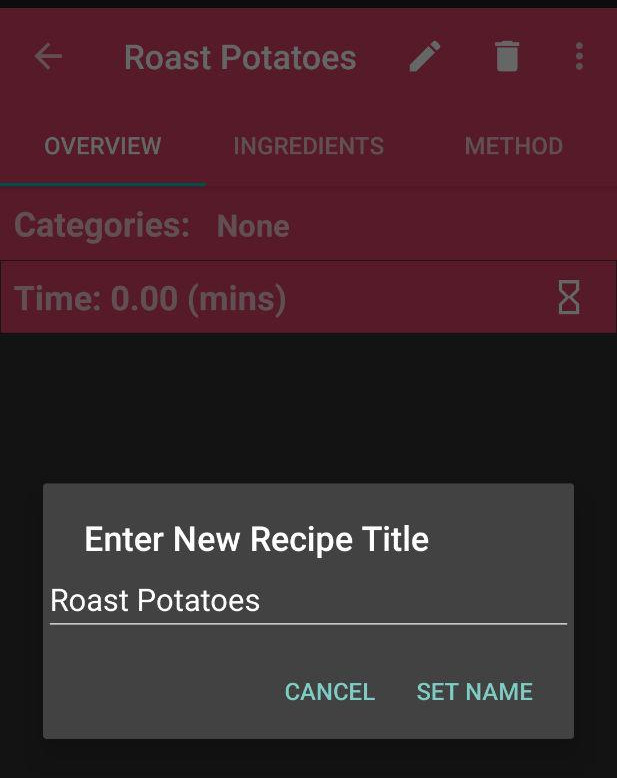
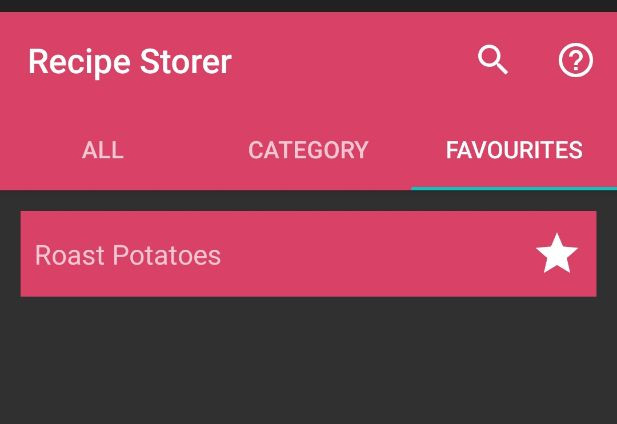

This user guide will show you how to use this app correctly, and show you the different features you can take advantage of.
Adding a new recipe couldn't be simpler! By selecting the + button
from the lower right corner of the home screen, you can add a
new recipe by entering a name for it. The recipe should now show up in the main list.
To edit the name of the recipe, simply tap on the list entry and press the
pencil icon in the top right corner, and modify the recipe's name. To delete a
recipe press the 'bin' icon in the top right corner of this screen.

To share a recipe with a friend, tap the 3 dots in the top right and choose a
app to share with.
To keep recipes organised there are a few tools to help. The simplest way is to re-order the
recipes on the home page so they're in a more convenient order. To do
so simply press and hold on a recipe entry, and move it up or down to re-order.
For those recipes you just keep coming back to, you can use the favourite feature.
By pressing the star next to your favourite recipes, they will be sorted away into
the 'Favourites' tab, where only favourited recipes will show up. To unfavourite a recipe,
simply press the star icon again.

You can also organise your recipes into categories, which we'll talk about later.
Adding a category is almost exactly the same as adding a recipe. Navigate to the 'Category' tab from
the top of the screen, and press the + button. Enter a category name and that's it!
To edit the name of the category, simply tap on the list entry and press the
pencil icon in the top right corner, and modify the category's name. To delete a
category press the 'bin' icon in the top right corner of this screen.
To edit information about a recipe, enter 'edit' mode by tapping the pencil
icon in the bottom right.
You can edit the overview text of a recipe by typing into the text box to act
as a description for the recipe.
To aid organisation further, recipes can be grouped into categories.
These categories can be anything you choose, as each recipe can have multiple
categories, and visa-versa.
If you tap the categories list (which should be
'none' if you haven't added any yet) a popup menu will appear where you can
mark all the categories you want this recipe to be in.
When you're done editing,
press 'done' and tap the save icon in the bottom right.
Adding ingredients to a recipe is as simple as adding a new recipe. Navigate to
the 'Ingredients' tab after selecting a recipe from the homepage (or category list/favourites).
From here press the + icon to open a popup menu, and enter the ingredient's name as well
as the amount for the recipe.
To edit an ingredient just press the pencil icon and modify the
information. To remove an ingredient from a recipe simply press the 'bin' button.
Like recipes, ingredients can be re-ordered to your preference by pressing
and holding on the ingredient, and dragging it to the desired position.
Adding steps to a recipe's method is similar to adding ingredients. Navigate to
the 'Method' tab after selecting a recipe from the homepage (or category list/favourites).
From here press the + icon to open a popup menu, and enter the step's description as well
as the amount of time to complete it. This allows the app to estimate how long a recipe will take,
and set a timer for you.
To edit a step just press the pencil icon and modify the
information. To remove an ingredient from a recipe simply press the 'bin' button.
Like recipes and ingredients, steps can be re-ordered to your preference by pressing
and holding on the step, and dragging it to the desired position. The step number will automatically
update to match the new position.
By adding time to each step of the recipe, it allows a timer to be started for each recipe.
Navigate to a recipe with an existing method, and tap on the 'Time:' row to start a timer
for the current recipe.
The timer will count down in your notifications and send another notification
when the recipe should be complete.
Looking for a recipe you've already added is super simple! If you've already tried
rearranging and utilising favourites but you're still struggling to find the
recipe you want, tap the search icon from the home screen and enter a search term.
From here any recipe with a matching title or category will be displayed similarly
to the regular recipe list.